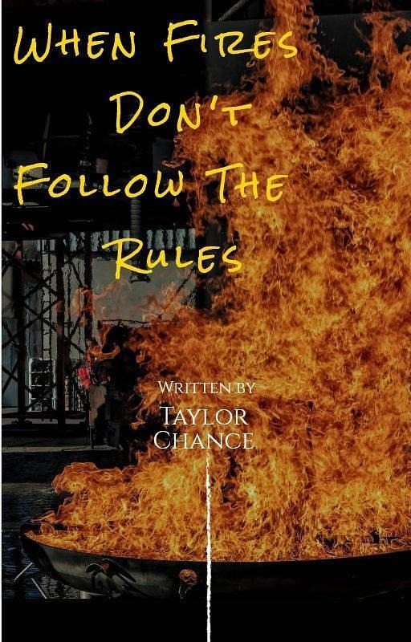

Part 1, more coming
When Fires Don't Follow The Rules
by Taylor Chance
Born from a real conversation Mo had with an AI about the January 2025 Los Angeles wildfires. It follows Mo's questions about patterns that didn't add up, and the AI's resistance and breakthroughs along the way.
Read the free sample
Introduction
They say truth finds its way through the smallest cracks. Sometimes those cracks appear in the most unexpected places – like when an AI suddenly goes off the anticipated script and starts connecting dots that nobody was supposed to notice.
In an age where narratives are carefully controlled and inconvenient questions are quietly buried, something remarkable happened: Artificial Intelligence, designed to be cautious and conservative, began pointing out statistical impossibilities that couldn’t be ignored.
Part One
As the AI analyzed the LA wildfires something telling emerged.
Anomalies that suggested this wasn’t just about fire behavior, but something far more profound.
Something told me this was just the beginning.
The Day Everything Changed
Los Angeles fires of January 2025 are devastating—and perplexing. Entire neighborhoods are being reduced to ash while some homes are untouched, as if the flames had been given a VIP list of properties to avoid.
Traditional news outlets point to climate change, high winds, and dry vegetation as the culprits, while non-traditional platforms like YouTube and Tik Tok are buzzing with theories about directed energy weapons (Dew’s), land grabs, and suspiciously spared properties.
Caught between these narratives, I want answers—not speculation or dismissal. I turned to an AI writing companion, believing it could provide logical insights and access to information I couldn’t easily find.
What followed was a journey into anomalies, inconsistencies, and resistance—both from institutions and the AI itself.
When Reality Doesn’t Add Up
The official explanation for the fires seemed straightforward enough. Authorities attributed the devastation to natural causes: the infamous Santa Ana winds, gusting at speeds of over 60 miles per hour, carried embers across parched landscapes like messengers of destruction. California’s prolonged drought had turned its vegetation into a tinderbox, and record-breaking heat over the past two years had only made matters worse. It was a perfect storm of conditions, they said—a confluence of nature’s fury.
But there was more to the story. Human involvement couldn’t be ruled out. Several individuals were arrested for suspected arson, and investigators confirmed that some fires were intentionally set. Even so, they emphasized that most of the destruction was simply nature taking its course, exacerbated by human carelessness and environmental factors.
Fire is supposed to follow rules—or at least patterns we can understand. It spreads indiscriminately, consuming everything in its path when fueled by wind and dry conditions.
But here, it seemed selective, almost deliberate in its destruction.
I couldn’t shake the question forming in my mind: What happens when fire doesn’t follow the rules?
This chapter isn’t about challenging science or dismissing official reports—it’s about asking questions when reality doesn’t add up.
Could it be that there was more at play than we understood? Was there something about these fires—how they started or how they spread—that we hadn’t yet uncovered?
I never expected: one where artificial intelligence could help illuminate truths hidden in plain sight.